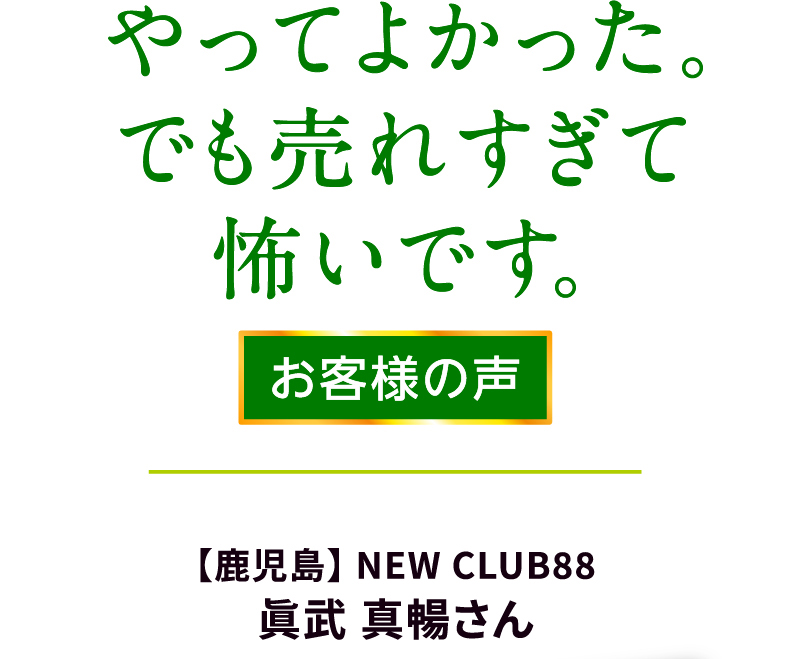
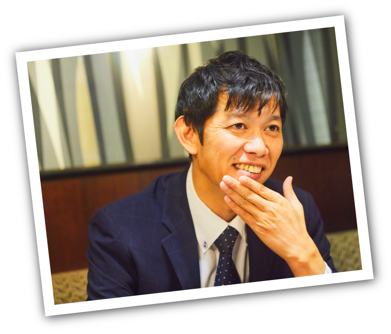
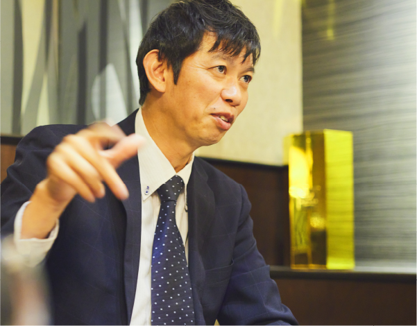
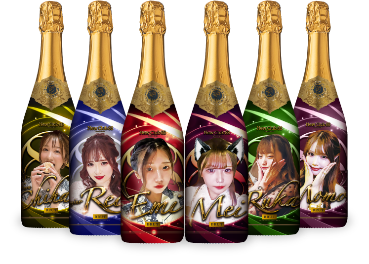
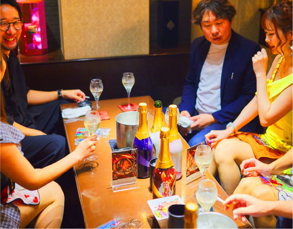
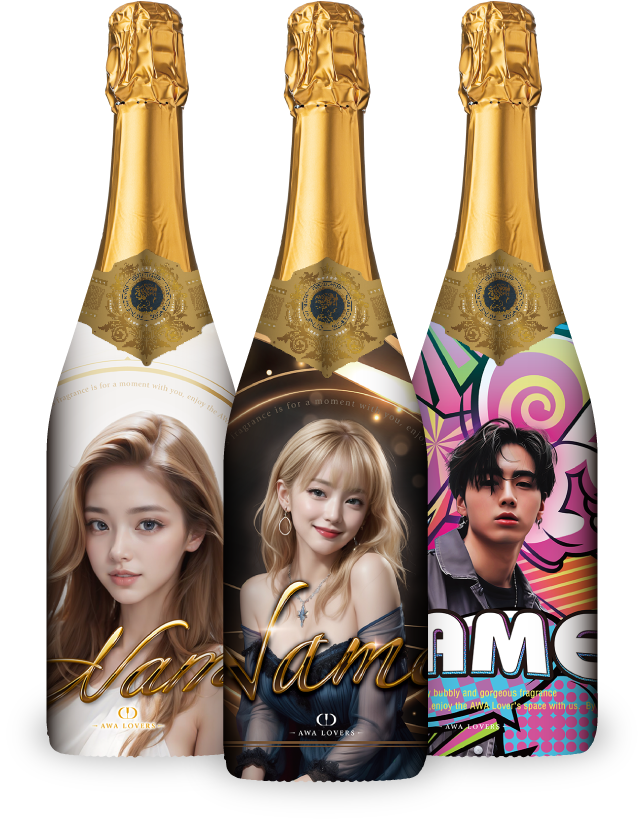
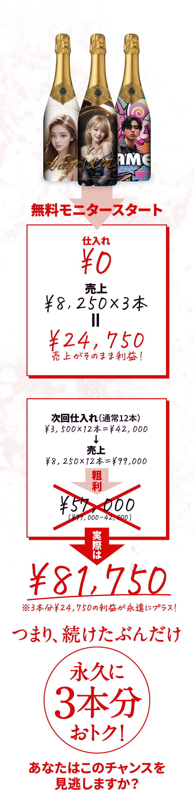

「おかげさまで、お客様にも大好評です。仕入れたその日にほとんど売れてしまいました。」
うれしそうな顔で、こう語るのは鹿児島の繁華街、天文館のNEW CLUB 88の店長眞武さん。オシャレでリーズナブルなお店として連日にぎわう人気のお店です。
「ウチでは、あまりお客様にシャンパンをオススメすることはないんですよ。キャストさんも進んで売り込むこともありません。それがイベントもやってない通常営業日で、こんなに売れるとは思いませんでした」


なぜか、売り込まずに売れちゃったんです。

泡ラヴァーズのオリシャン初めてと言うことですが、実際に使ってみた感想は？
眞武さん：オリシャン、少しずつ流行っていますよね。売れているのは聞いていたんですが、正直なところ、ウチでは特にオリシャンにこだわっていなかったんです。
『泡もの』って高額なイメージがあるでしょう？。先ほどお伝えした通り、うちのお店はリーズナブルな料金でお客様に気軽に楽しんでいただくのがコンセプトですから。
大事なことは「まずお客様に無理せず楽しんでいただくこと」。というわけで、これまでの営業で特に重視してなかったんです。
それが変わった。と？
眞武さん：もともとはお客さんがオリシャンの写真をウチのキャスト「えみさん」に見せたのがきっかけです。それを見て「店長、ワタシもこれつくりたい！」って（笑）
まぁ、それで毎日の営業が楽しくなるのなら。ということでお試しでお店で使ってみたんです。あまり強引に売り込まないようにね。と念押しもしました。なのに仕入れたその日、開店直後に一本目が開いちゃったんです。（笑）
強引に売り込んじゃったんですか？
眞武さん：それが全然（笑）。事前にインスタで告知したのも効果があったんでしょうね。お客さんに「こんなの作っちゃった」って言っただけで、すぐにオリシャンが開いちゃいました。
それからあとは、それを見たお客さんが「俺もあれ、開けたい」と。他のキャストさんのボトルも流れでポンポンと開いちゃいました。お客さんがとても楽しそうな顔をしていたのが印象的でした。
一回興味を持ってくれたお客様がすぐに頼みたくなったと言うわけですね。
眞武さん：そうです。こんなやり方もあるんだな。と。せっかく楽しみに来ていただいてるわけですから、お店側としては強引なセールスはしたくないのが本音ですよね。
キャストさんが楽しめば、お客様も楽しんでくれる。その流れが作れれば、自然と売り上げが上がる。つまりあせらず接客ができるからサービスのクオリティが上がる。
一本のオリシャンがそのきっかけとなるなんてビックリです。
お客様が楽しんでくれるのが私たち接客業にとっては何よりの喜びですから。これはとても貴重な体験でしたね。
写真真ん中がえみさん。
「自然に売れるし、なによりお客さんが喜んでくれるのが嬉しい。映えるデザインも好きです」
インスタを活用すればその効果は絶大です。

上がNEW CLUB 88様で使われた、それぞれのキャストさん専用のボトル。シチュエーションに合わせていろんなデザインが選べます。もちろん完全オリジナルのデザインも可能です。
今なら無料で
「秘密のオリシャン」
をゲットできます。
納品の速さがうれしい。

泡ラヴァーズのオリシャンにご要望などありますか？
眞武さん：要望というか、お店のマネージメントをする立場として、気づいたことがあります。
1つ目は商品価格が他のオリシャンと比べてリーズナブルなこと。泡ラヴァーズの商品はお店での販売価格も自由に設定できますよね。つまり、購入価格を抑えることでキャストさんへのバックの金額を増やすことができます。当たり前ではありますが、これはお店にとってはとても重要なことです。
2つ目に、納品の速さ。注文してから一週間以内に届いたのにビックリしました。納品が早いから急なイベントにも対応できるし、LINEで写真を送るだけで気軽に注文できるのもうれしいですね。
3つ目はおいしいこと。今は、いろんなオリシャンが各社からでていますが、味わいは重要な要素です。せっかく楽しんでくれるお客様だからちゃんとおいしいお酒を楽しんで欲しい。それにおいしいと２本目も出やすくなります。そうなると、お客様の楽しい時間はもっと続きますよね。正直、このオリシャンは他の飲食店でも使えると思います。
あっ、ひとつだけクレームを思い出しました。通常日でもすぐに売れるのはうれしいのですが、売れるのが速すぎて、キャストさんが酔っちゃうのも早くなるんですよね。
もう「一晩あたり、ひとり一本しか開けたらダメ」ってルールを作った方がいいですかね（笑）
今なら無料で
「秘密のオリシャン」
をゲットできます。
お客様が喜ぶ
味わいです。

安定的な集客や売上を目指すなら見た目はもちろん、味わいも大事です。
今回オススメしているのは飲みやすい味わいの上質なスパークリングばかり。味わいがいいから何本でも楽しめちゃう。お酒に弱いスタッフさんのために低アルコールのお酒も用意しておきました。
---------------------
＜3つの銘柄から選べます＞
① ヴァン・ムスー・ブリュット ソレイユ
【750ml／フランス／辛口／10.5%】
② ペティリアン・ド・リステル〈青リンゴ〉
【750ml／フランス／やや甘口／3.5%】
③ ペティリアン・ド・リステル〈グレープ〉
【750ml／フランス／やや甘口／2.5%】

先着100店舗。
今、無料モニターに
申し込めば
永遠におトクです。
お客様の笑顔をもっと増やせるのがオリジナルラベルの強み。他の店より安くしなければ…なんて心配はいりません。 お気づきですか？この無料モニターで手に入れたオリシャンを1本¥8,250円以上で売れば、永遠におトクになるんです。
